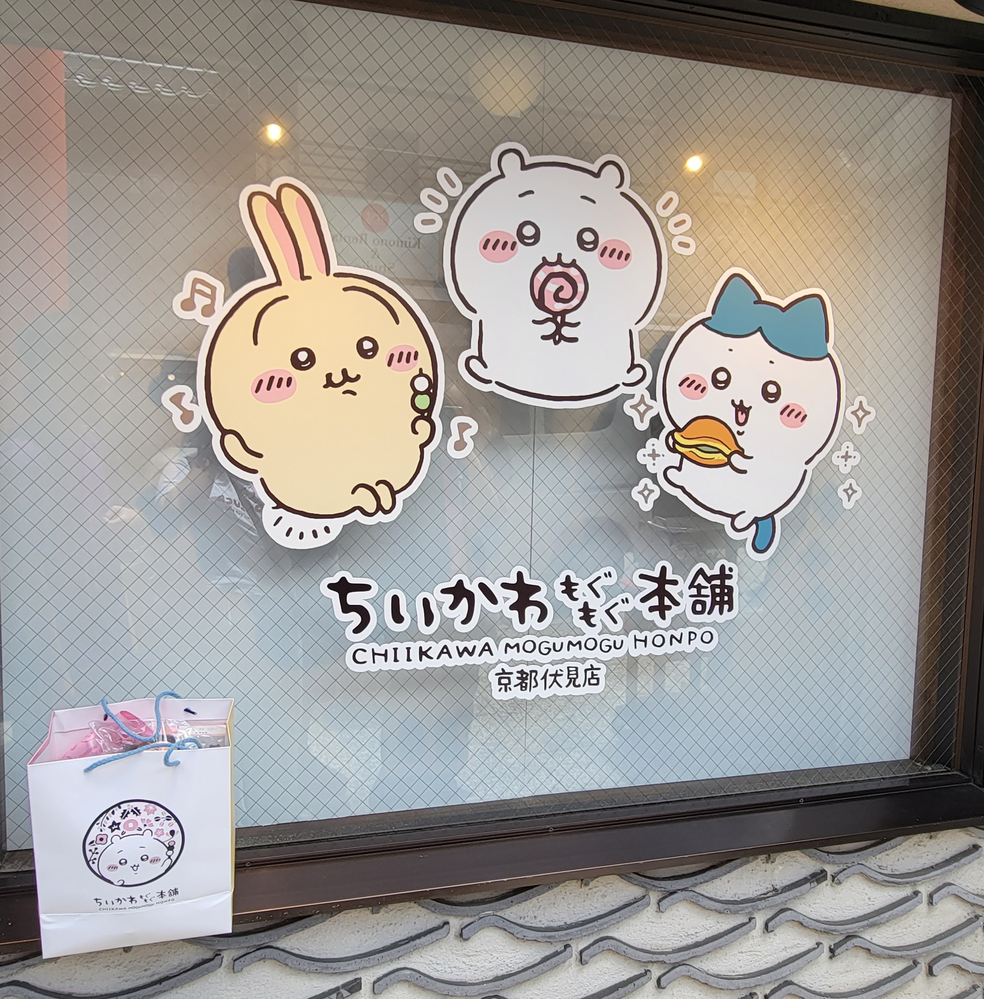
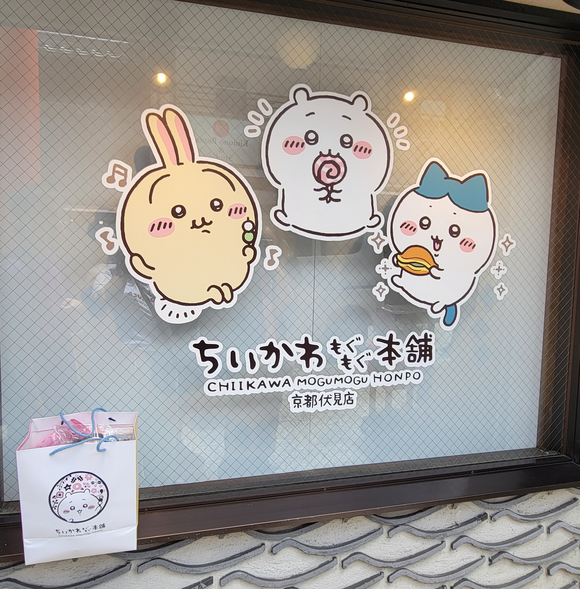
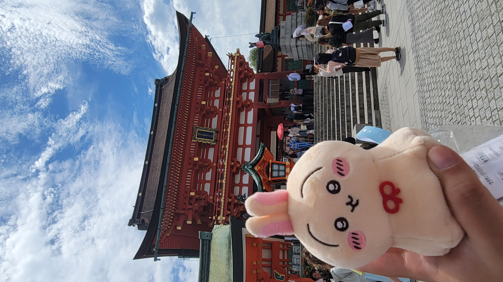
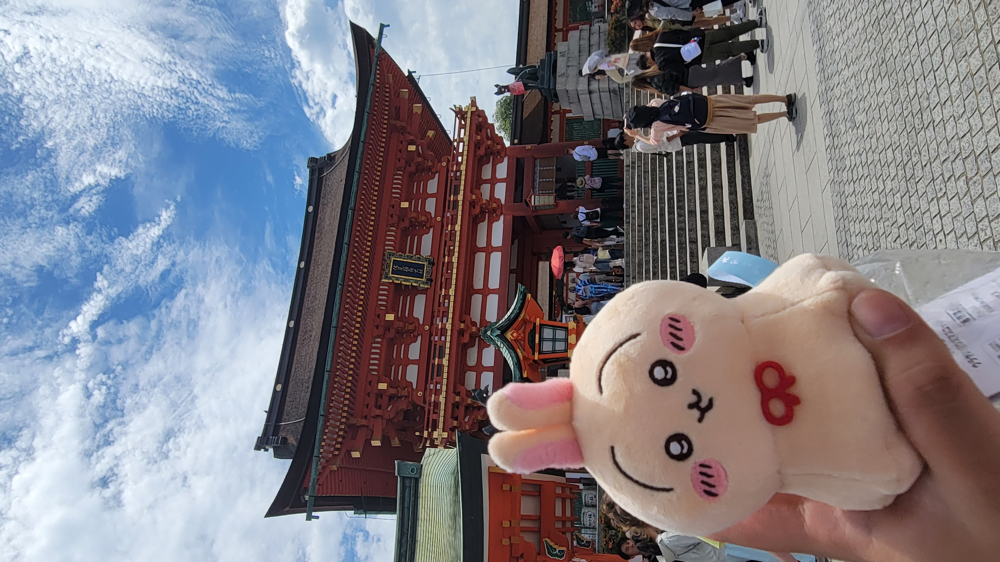

Rediscovering Childhood Through Nintendo’s Museum
During this study tour, we visited the Nintendo Museum in Uji, Kyoto, on the 6th of June.
Since our entry to the Nintendo Museum was at 2pm, we went to Fushimi Inari Taisha in the morning to have a walk and buy souvenirs for friends. We found a Chiikawa shop there and bought many souvenirs and goods there!
 

Visiting Fushimi Inari Taisha
We walked up to the Fushimi Inari Taisha Tower Gate and took some photos without stepping up to the top of the hill. We walked up a little bit and bought an omamori for wishes to come true.
What nice weather!
 

Visiting Uji
We had some time left before visiting the Nintendo Museum after lunch, so we decided to get off at one station where the Nintendo Museum is located to have a walk. Uji is famous for green tea, also known as matcha. We tried the matcha ice cream from a shop called Patisserie Yuji. The matcha ice cream was covered with matcha powder and a teddy bear-like rice cracker; it tasted so good that we finished it quickly. After completing the matcha ice cream, we bought matcha powder and tea bags from nearby shops.
Heading to the Nintendo Museum
We arrived at the Nintendo Museum around 1:45pm, and only the visitors who won the lottery or bought tickets online were allowed to visit. After storing our belongings in the provided lockers, we headed into the museum with our admission card, which our names were printed on!
We had a great time in the Nintendo Museum, where many photos and videos were taken.
The exhibition of history, gaming machines from the past, and released games on the second floor of the Nintendo Museum are not allowed to take photos. Still, we were lucky enough to see Switch 2 on the day of its release to the public, and it was allowed to take pictures.
We went down to the first floor to experience those games; every one of us only had 10 coins, and each game would use different coins. We played Zapper & Scope SP, Ultra Machine SP, and Ultra Hand SP this time.
Quincy got a bronze trophy at Zapper & Scope SP, and everyone clapped their hands!
We played Ultra Hand SP twice since we got bad scores for the first time, and we chose to get revenge for the second time. We need to collect Electrodes and Pokeballs to set off fireworks.
We saw our childhood there! Nintendo DS and 3DS on the walls! Also, Wii Balance Board! Many controllers were placed on the wall, and finally, we could take photos with them; some were being disassembled, and we could see circuit boards inside.


We had a great time there and wanted to revisit the Nintendo Museum to try different games with 10 more coins!